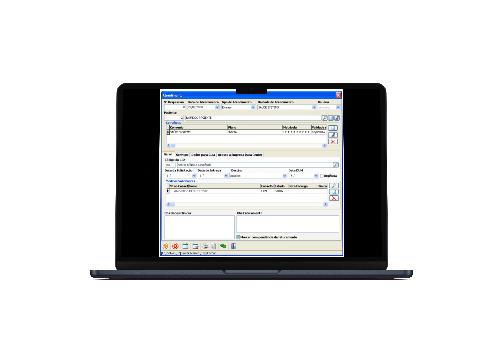

Espaço para a imagem
O SSWEB possui funções que facilitam e agilizam o processo de coleta das amostras. Esses processos fazem com que seu atendimento seja rápido, evitando filas e organizando amostras de maneira fácil para serem analisadas.
É possível fazer coletas no local, organizando as amostras para emissão dos resultados.
Todas as amostras podem ser identificadas através de códigos de barras, organizadas por setores de resultados, além da possibilidade de impressão da ficha de bancada.

O SSWEB possui funções que facilitam e agilizam o processo de coleta das amostras. Esses processos fazem com que seu atendimento seja rápido, evitando filas e organizando amostras de maneira fácil para serem analisadas.
É possível fazer coletas no local, organizando as amostras para emissão dos resultados.
Todas as amostras podem ser identificadas através de códigos de barras, organizadas por setores de resultados, além da possibilidade de impressão da ficha de bancada.